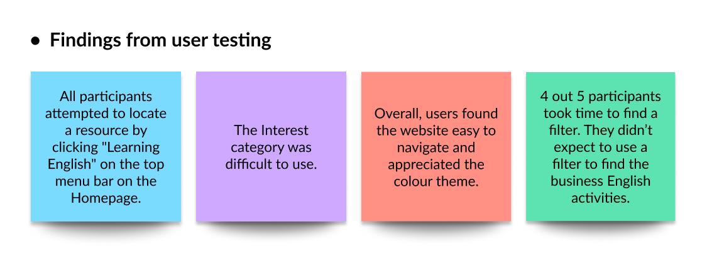

Why The Design Sprint? üëÄ
In mid-November, I found a job post I wanted to apply for, but I didn’t have many case studies that I can present. At that time, I was already busy creating a portfolio website using coding so I didn’t have enough time for a new project.
Then, a lightbulb moment! The Sprint book on my bookshelf caught my eye. I was hooked! Five days to create a case study?! Challenge accepted! Five days later, I created a new Learning English page for the Cambridge University Press & Assessment.
Throughout this project, I discovered that, for a user-centred design, it's crucial to comprehend not just the users' needs but also their behaviours. User testing revealed that my initial hypothesis about user behaviour in selecting a learning resource didn't align with reality. This prompted me to enhance my design to better cater to their needs and behaviours.
Have you ever visited the Cambridge University Press & Assessment for learning English?
Unfortunately, this was my first time visiting the website, and I wasn't aware that they offered free learning resources. If I had known, I could have utilised these resources when I was studying for the IELTS! While browsing the website, I identified areas that could be improved for a better user experience.
My challenge was to create a new Learning English page. The website offers various learning resources for learners, teachers, and organisations for free, which is excellent. However, the resources are currently organised in a somewhat random order, making it difficult to find specific ones. My goal is to ensure that the page is user-friendly, allowing learners to effortlessly discover resources that match their learning objectives. Additionally, I aim to help users stay motivated so they can continue improving their English skills.
Problem ü§î
Users want to improve their English skills for various reasons such as
"I want to have a
foreign friend" or "I want to know more about Harry Potter" or "I want to improve it for
getting a better job".
However, due to a lack of motivation and difficulty in finding a learning resource they
want to learn or use, it is difficult for them to make progress.
Solution üí°
- 1. Search bar: Add a search bar for easy identification of resources aligned with their learning goals (e.g., Travel English, Business English, Entertainment) on the main page.
- 2. Advanced filters: Add the most popular interests as a main filter, allowing users to discover resources that match their learning goals.
- 3. Engaging learning content: Introduce content related to their common learning goals, enhancing the enjoyment of the learning experience.

Design Process üë©ü誂Äçüíª
✨ Here's how I ran the solo-sprint, where I diverged from the Sprint book, what worked well, and where I went astray. Before I started the design sprint, I had a quick research about the organisation and conducted a user survey so I can have clear goals and objectives for the design sprint.
1️⃣ Monday: Understand the problem, map it out and choose a target
Analysing the data from the user survey and conducting in-depth research about the organisation helped me define the problem and set a clear goal for the project. As it was my first day of the design sprint, I wasn't 100% sure whether I was on the right track. However, I used the book as a guide and completed the tasks one by one.
By the end of the day, I had determined the following:
2️⃣ Tuesday: Sketch competing solutions
I reviewed the features that were effective for competitive analysis, confirmed their applicability to our website, and followed a four-step sketching process (Gather information → Write down ideas → Crazy 8 → Storyboard). Utilising Crazy 8, I sketched three ideas and, after careful consideration, created storyboards for two. While in a typical sprint, one might choose the best idea for a storyboard, in this solo sprint, my goal was to generate and narrow down as many ideas as possible.

3️⃣ Wednesday: Decide on the best solution
In the morning, I conducted a thorough review of the storyboards, critiquing each idea to assess strengths, areas for improvement, and elements that weren't working. Once I selected the concept, I expanded the storyboard to create a more comprehensive user journey, laying the groundwork for tomorrow's task of developing a prototype. Given the solo nature of the sprint, decision-making was expedited since there weren't extensive discussions or multiple ideas to consider. To compensate for the absence of team members, I simulated discussions by engaging with Chat GPT as if they were colleagues. This exercise not only allowed for constructive criticism but also led to the discovery of valuable ideas. Critiquing and developing ideas through this process was enlightening, and I look forward to future discussions with real people in my next project.

4️⃣ Thursday: Build a realistic prototype
To begin the day, I crafted a low-fidelity wireframe to examine the layout and alignment, closely mimicking the structure of the current website. My coding skills enabled me to precisely replicate elements, from fonts to paddings, while ensuring adherence to the organisation’s colour theme and style. I transitioned to the high-fidelity stage and sent reminder emails to participants for user testing.
5️⃣ Friday: Test with target users
I conducted user testing with 5 participants. My goal for user testing was to see whether the website is easy to navigate and whether users find a advanced filter useful (is it helpful to find the right resources that meet their learning goals?).
Unfortunately, my hypothesis regarding user behaviour when choosing a learning resource did not align with their actual behaviour. From the research stage, I discovered that people have various reasons to learn English and these motivations are not improving their grammar or listening skills. The reasons behind is that they want to have a new foreigner friend, want to know about their favourite movies and for their career. Their ultimate goal for learning English is not certainly improving a listening skill. To address this, I aimed to add the interest in filters so users could learn to achieve their learning goals. However, users didn’t think about their ultimate goals when they try to choose a learning resource.
As a result, I updated the prototype with the following:
- 1. Learning tip: Added a sentence encouraging users to remember their learning goals when selecting a learning activity.
- 2. Search bar: Included a search bar for easy identification of resources aligned with their learning goals (e.g., Travel English, Business English, Entertainment).
- 3. Advanced filters: Added the most popular interests as a main filter, allowing users to discover resources that match their learning goals.
What I Learnt üå±
The Design Sprint: Through this project, I have gained a strong understanding of the design thinking process and how to apply it to complex problems. Every technique in the design sprint proved beneficial, and one of my favourites is the 4-step design sketch. This method helped me to swiftly visualise ideas, facilitating the identification of improvements and errors in the process.
Collaborative Problem-Solving: The importance of collaboration became evident during moments of creative block. Whenever I faced with challenges or a mental roadblock, I had a brainstorming session with my husband. This collaborative effort not only sparked new ideas but also served as a constructive means to identify improvements and detect errors. The power of collaboration, especially in overcoming mental hurdles, was a significant revelation during this case study.
Next Steps ⏭️
Solving another problem:Through the user survey and user testing, I also found that users prefer offline courses to online courses/activities. The reasons are that they want to interact with people to be motivated and get instant feedback. I would love to tackle this problem: "How might we make online resources more interactive so users enjoy learning online?"